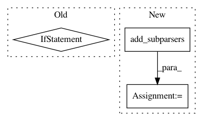

aeb516494daa207720b428072ab49eeea7bfff75,scripts/text_generation/sequence_sampling.py,,,#,33
Before Change
parser.add_argument("--temperature", type=float, default=1.0,
help="Softmax temperature used in sampling.")
args = parser.parse_args()
if not args.use_beam_search and not args.use_sampling:
parser.error("No decoding option specified. Add one of --use-sampling and --use-beam-search.")
print(args)
if args.gpu is None:
ctx = mx.cpu()
else:
After Change
"WikiText as our encoder.")
// beam search sampler options
subparsers = parser.add_subparsers(help="Sequence generation methods.",
dest="command")
subparsers.required = True
beam_search_parser = subparsers.add_parser("beam-search", help="Use beam search for decoding.")
beam_search_parser.add_argument("--alpha", type=float, default=0.0,
help="Alpha in the length penalty term.")
In pattern: SUPERPATTERN
Frequency: 4
Non-data size: 3
Instances
Project Name: dmlc/gluon-nlp
Commit Name: aeb516494daa207720b428072ab49eeea7bfff75
Time: 2019-06-13
Author: xshiab@ust.hk
File Name: scripts/text_generation/sequence_sampling.py
Class Name:
Method Name:
Project Name: divamgupta/image-segmentation-keras
Commit Name: 5062dcd3fea1b50eeaed3ce6555b9ad7fe51909d
Time: 2019-09-22
Author: rounaqwl66@gmail.com
File Name: keras_segmentation/cli_interface.py
Class Name:
Method Name: main
Project Name: danforthcenter/plantcv
Commit Name: 86ac6632c5c84d1b5a0018d395542d649d27ca6a
Time: 2017-05-03
Author: noahfahlgren@gmail.com
File Name: plantcv-train.py
Class Name:
Method Name: options
Project Name: kubeflow/kubeflow
Commit Name: 4b64702c794b18b443a1f2a2042641114c0a122a
Time: 2018-02-12
Author: jeremy@lewi.us
File Name: testing/test_deploy.py
Class Name:
Method Name: main